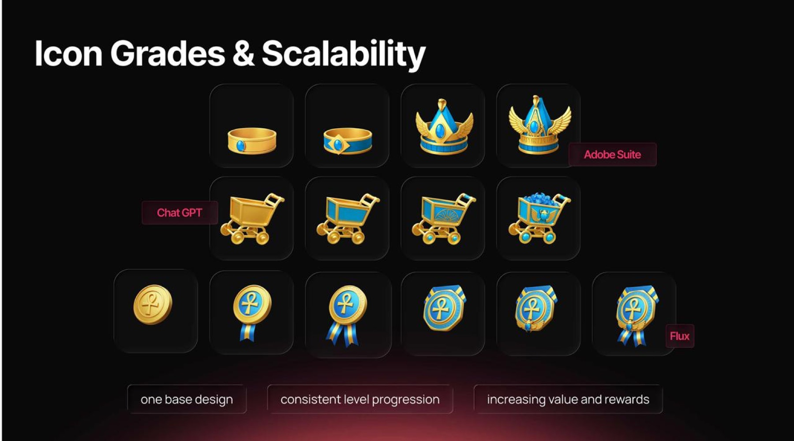

Icon Grades & Scalability
A tiered icon system for a game's in-app economy — one base design scaled into consistent visual grades, so rarer items read as more valuable at a glance.
- One base design
- Consistent level progression
- Increasing value and rewards